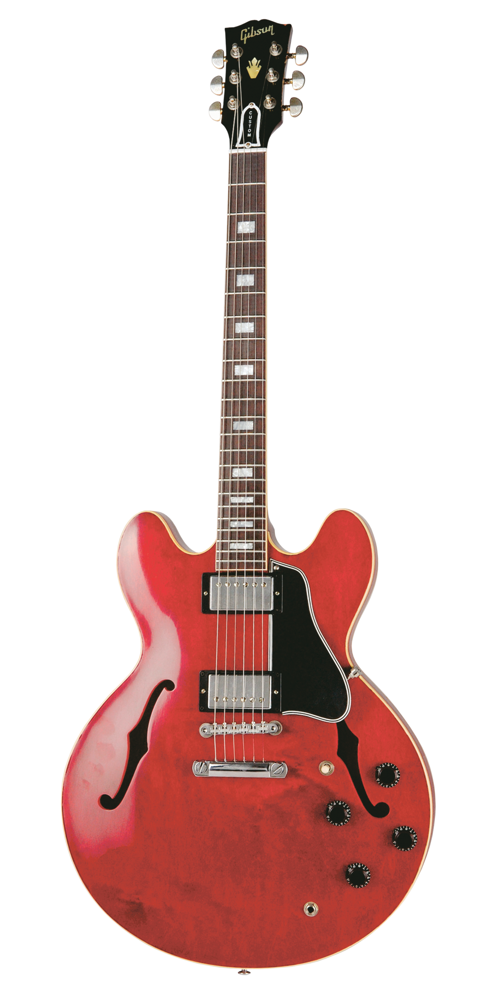

The Sweet Sound of '64
The Historic Reissue ES-335 is back and better than ever thanks to a year of studying, scanning, and listening to original examples. The expert craftspeople at Gibson Custom Shop have rendered every contour, profile, inlay and color of the priceless vintage models in magnificent detail. The result is a playing and ownership experience that will keep you coming back for more. The 1964 Reissue models utilize sharp horn cutaways, medium C-shape neck profiles scanned from originals, small block inlays and vintage-replica parts.
